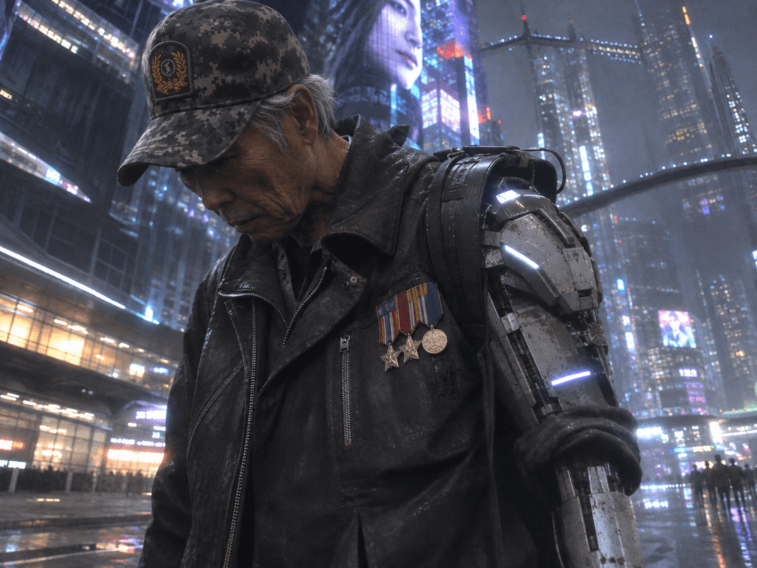
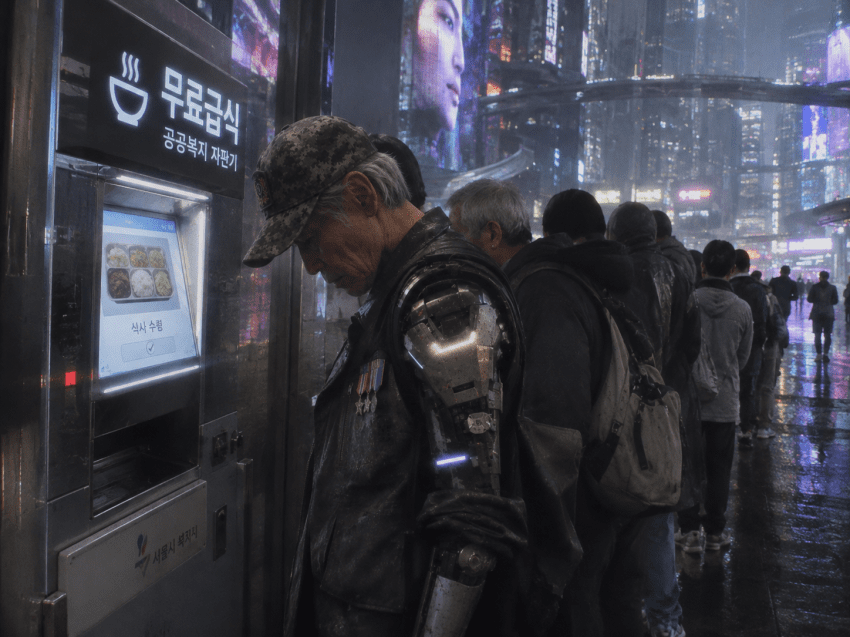
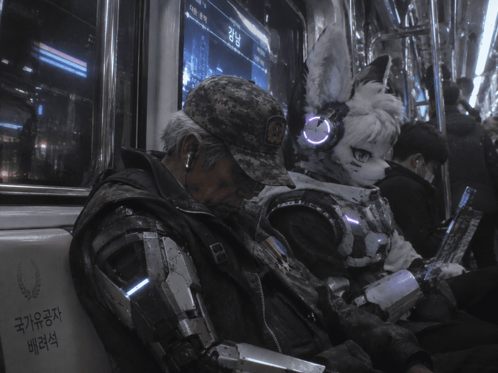
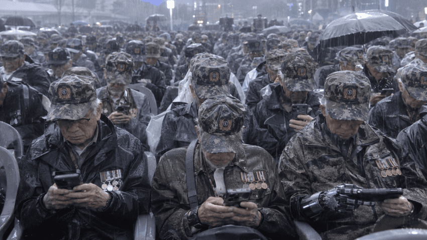
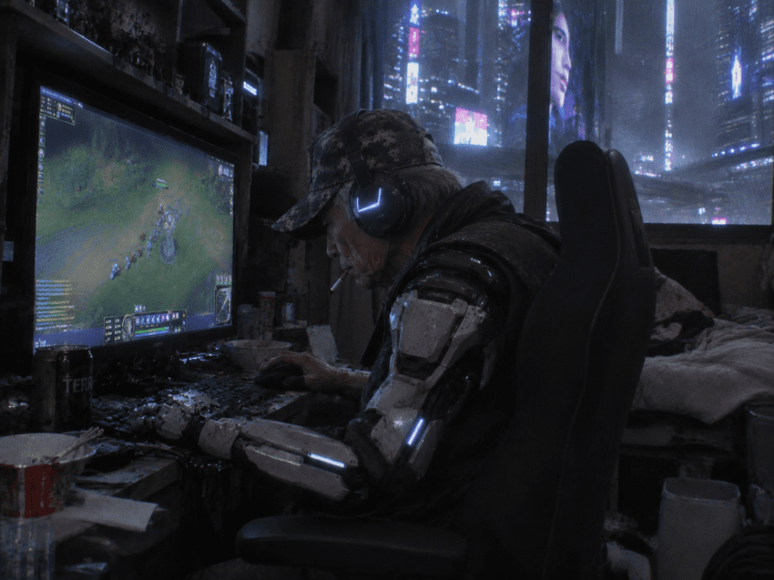

2080년 참전용사 김싱붕(76), 전쟁에서 팔을 잃고 로봇팔을 단 채 하루하루 연명중이다

식비가 감당이 되지 않아 오늘도 밥은 무료급식소에서 먹는다.

정년퇴직한 나이이기에 할일이 없어 지하철에서 이어폰을 끼고 시간을 때우며 하루종일 거리를 배회한다.
일자리라도 구해보고 싶지만 틀딱 싱붕이를 원하는 업장은 어디에도 없다.

하지만 오늘은 민족기념일인 통일절이다.
연락할 사람조차 없는 싱붕이도
북괴를 멸망시킨 참전용사로써 승전기념식에 참석했다.
간만에 전우들과 만나니 기분도 좋고 홀가분하다.

전우들과 한껏 뒷풀이를 한 싱붕이는 집으로 돌아와
국가유공자 수당으로 얻은 골방에서
길다면 긴 하루를 마무리한다.